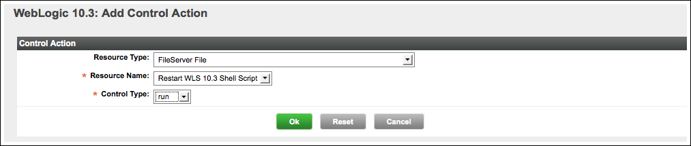

vFabric Hyperic 5.0 : ui-Alert.ControlAction
This page last changed on Jan 04, 2012 by mmcgarry.
Available only in vFabric Hyperic
Configure a Control Action as an Alert Action
In vFabric Hyperic, you can configure an alert to fire a supported resource control action either on the resource that fired the alert or on another resource on the same platform. You can assign either a built-in or a custom control action to an alert definition. For more information, see Resource Control in Hyperic.
- Navigate to the alert definition.
- Click Edit in the "Control Action" section of the alert definition page.
- The Control Action page appears.

- The Control Action page appears.
- The Resource Type pulldown lists the resource types with supported control actions that exist on the current platform. These include:
- Resource types whose managing resource plugins implement control actions.
- The service type "FileServer Service", if any instances of that type exist on the platform.
- A custom control action is configured as a "FileServer Service" platform service. The configuration process is described in
- Select the target resource type from the Resource Type pulldown. (Select "File Service" if you want to assign a custom control action to the alert.)
- After you select a resource type, the Resource Name pulldown will contain a list of the resource instances of that type that run on the current platform.
- Select resource from Resource Name pulldown — this will be the target of the control action, or if the selected type is "FileServer File", the custom control action to be run.
- The Control Type pulldown lists the commands available for the selected resource. Select the command you want to run when the alert fires.
- For a custom control action configured as a FileServer File service, the only command available is "run".
- Click OK.
To remove the Control Action from the alert definition, edit the alert definition, select "None" from the Control Type pulldown, and click OK.
{kind=link}
{kind=link}
{kind=link}
{kind=link}